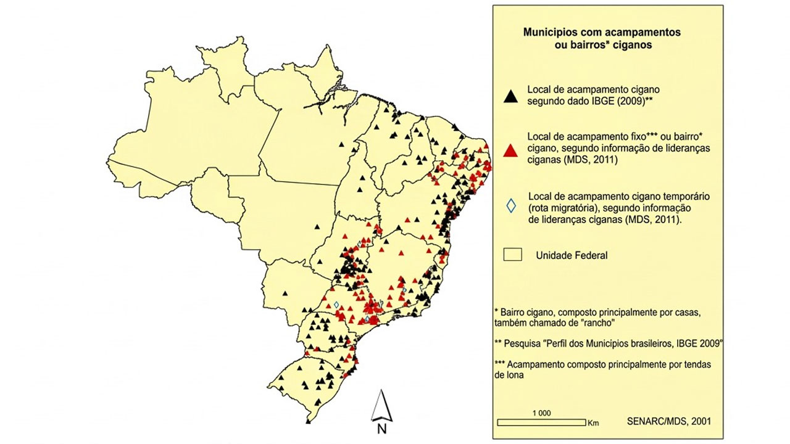
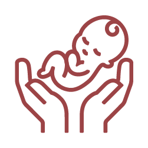
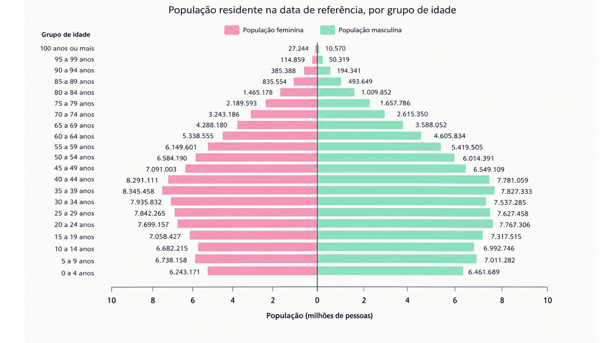

Mapeamento da população cigana no Brasil: necessidades de saúde, morbimortalidade e principais condições atendidas na APS e dados demográficos
Ao final desta aula, você será capaz de:
- Identificar os problemas no mapeamento das populações ciganas e a importância da análise demográfica.
- Conhecer as possíveis abordagens para mapear as populações ciganas e as necessidades de saúde.
A dispersão geográfica e a falta de coesão entre os vários grupos romanis (ciganos) estão entre os principais desafios para o reconhecimento da identidade coletiva e para uma mobilização política em diversos níveis. Séculos de dispersão e diferentes governantes produziram um rico mosaico de povos ciganos.
“A discriminação é às vezes a única coisa que parece unificar os romanis, e é precisamente isso que os romanis buscam eliminar.”
(Silverman 2012, P. 47)
Em muitos países, os ciganos são sub-representados em censos e em outras pesquisas populacionais devido à desconfiança nas autoridades e ao medo de discriminação. Afinal, declarar-se cigano pode ser perigoso em alguns contextos marcados pelo racismo e violência. Os problemas de notificação e quantificação estão relacionados também à invisibilidade e preconceitos contra os povos ciganos, que promovem desde exclusão em ações censitárias até segregação espacial derivada de estereótipos negativos profundamente enraizados no Brasil e outros países. O preconceito existente resulta em pouco interesse da sociedade mais ampla em integrar as pessoas ciganas.
Com relação aos cuidados com saúde, as ações direcionadas às pessoas ciganas são complicadas em decorrência da falta de dados específicos sobre essa população. Como resultado, as políticas de saúde muitas vezes não levam em conta as necessidades específicas dessas coletividades.
Algumas questões se colocam de pronto sobre a identidade desses indivíduos e sobre espacialização no território brasileiro.
Onde estão os localizados no território brasileiro? Quantos ciganos há no Brasil? Qual(is) o(s) perfil(is) demográficos e socioeconômicos dessas famílias? Quantos são sedentários?
Nessa aula, vamos tratar das questões relativas à distribuição da população cigana em território nacional e as implicações para as políticas em saúde. As condições de saúde dos ciganos são amplamente influenciadas por fatores socioeconômicos, discriminação e exclusão social.
A Atenção Primária à Saúde (APS) é a primeira fase de contato da população com o sistema de saúde, oferecendo cuidados próximos às residências e locais de trabalho. Ela abrange ações individuais e coletivas para promover a saúde, prevenir e tratar doenças, reabilitar, reduzir danos e manter a saúde geral da população. A APS deve ser facilmente acessível, com horários variados e atender às principais necessidades de saúde, tanto médicas quanto sociais, de forma contínua e adaptada à realidade local. Dessa forma, a proximidade geográfica com as pessoas ciganas se torna um imperativo para a sua efetividade. Aprofundaremos esse assunto no módulo 4.
Mapeamento da população cigana no Brasil
O mapeamento populacional e étnico em saúde é fundamental para o desenvolvimento de políticas públicas, a análise epidemiológica e a alocação dos recursos de saúde. Esse processo inclui a coleta, análise e visualização de dados demográficos, com foco nas características étnicas e raciais das populações, para identificar desigualdades em saúde e promover a equidade. Os mapas desempenham um papel importante em saúde pública, auxiliando no (a):
- planejamento de intervenções
- monitoramento de surtos
- identificação de grupos vulneráveis
- comunicação de dados de saúde
- identificação de disparidades
- implementação de políticas públicas específicas para diferentes grupos populacionais.
Essas ferramentas são essenciais para pesquisadores e cientistas na análise e resolução de problemas de saúde. Além disso, o mapeamento das distribuições espaciais de doenças e riscos pode ser útil para identificar exposições relevantes para a saúde pública.
Seguindo metodologias rigorosas e orientações éticas, o mapeamento reside na capacidade de identificar e quantificar desigualdades em saúde entre diferentes grupos étnicos, fornecendo uma base sólida para o desenvolvimento de intervenções direcionadas que podem mitigar desigualdades sistêmicas.
A Pesquisa de Informações Básicas Municipais (MUNIC) identificou no ano de 2011 o total de 291 municípios brasileiros que declararam a presença de acampamentos ciganos em seu território. Em 2013, contudo, a publicação da Seppir intitulada “Brasil Cigano: guia de políticas públicas para o povo cigano” apresentou um mapa com a distribuição dessa população, reunindo os dados do Munic com informações de lideranças ciganas. Observam-se diferenças entre os dados coletados pelo IBGE em 2009 e as informações apresentadas por lideranças ciganas, que podem ser compreendidas como fontes complementares para a caracterização dessa população. Corroborando o que pontuou Silva Júnior (2018): “os dados que permitem a quantificação e localização dos povos ciganos do Brasil apresentam inconsistências, uma vez que não há a inclusão desses no censo populacional”. Observe o mapa a seguir:

Este exercício de mapeamento fornece uma base de evidências para construir uma compreensão sobre os números, as localidades e as necessidades da população romani vivendo no Brasil, garantindo que os objetivos de inclusão dos romanis brasileiros sejam aplicados e que o governo brasileiro tenha uma base para elaborar ações. Entretanto, seria indispensável avançar e atualizar o mapeamento. Outro aspecto relevante que pode ajudar na formulação de políticas públicas de saúde para os ciganos é a análise demográfica. A demografia estuda as características das populações, como tamanho, estrutura etária, distribuição geográfica e composição por gênero, etnia e outras variáveis sociais. Esses dados são fundamentais para a saúde pública, pois permitem identificar grupos vulneráveis, prever demandas por serviços de saúde e orientar a alocação de recursos.
Uma população composta por muitas crianças terá necessidades diferentes de uma população mais envelhecida, por exemplo. A análise da transição demográfica, onde se observa a mudança de uma população com altas taxas de natalidade e mortalidade para uma com baixas taxas, impacta diretamente a estrutura etária da população e, consequentemente, confere novas necessidades de saúde.
Estrutura demográfica e necessidades de saúde
O Brasil está passando por uma significativa transição demográfica devido à queda da fecundidade iniciada na década de 1960, que se espalhou por todas as regiões e classes sociais do país. Esse processo é acompanhado pelo(a):

Redução da mortalidade infantilA combinação desses fatores está alterando o perfil demográfico do país, resultando em uma população envelhecida e com crescimento muito baixo, possivelmente negativo num futuro próximo.
Em poucas décadas, o envelhecimento da população representará um dos principais desafios para o sistema de saúde, exigindo novos recursos e estratégias para atender às demandas crescentes dos idosos. A resposta a essas necessidades inclui:
- a implementação de programas de saúde específicos e eficazes
- criação de uma rede de proteção social adequada
- revisão de procedimentos e protocolos assistenciais
- garantia de quantidade e qualidade adequadas de profissionais de saúde para lidar com novos quadros sanitários.
Apesar da diminuição do número de nascimentos, a mortalidade infantil continuará sendo uma prioridade nos próximos anos, devido às suas implicações diretas na saúde e qualidade de vida da população. A mortalidade infantil é um indicador das condições de saúde e pode ser causada por uma combinação de fatores biológicos, sociais e falhas no sistema de saúde. A redução da mortalidade infantil requer tanto mudanças estruturais nas condições de vida quanto políticas públicas direcionadas, com a mortalidade sendo dividida em neonatal e pós-neonatal para melhor compreensão e intervenção.
Os dados do censo IBGE de 2022, mostram o envelhecimento da população brasileira - a mediana da idade da população é de 35 anos -, com queda da taxa de natalidade e aumento na expectativa de vida. Seria importante verificar se a população cigana segue a mesma tendência do restante da população brasileira.

Outro aspecto que merece destaque na análise demográfica é a mobilidade. A migração também afeta o tamanho da população e as análises demográficas ajudam a esclarecer as características e tendências dos fluxos migratórios. A migração afeta a demografia dos países e regiões envolvidos, incluindo efeitos sobre a população total, a estrutura etária e a composição por gênero.
No caso dos ciganos, há grupos itinerantes, que mudam com rapidez, em movimentos intermunicipais, interestatais e inter-regionais - alguns que possuem uma dinâmica transnacional -, enquanto há outros que são sedentarizados, permanecendo gerações na mesma localidade.
Muitos ciganos portugueses mantêm um estilo de vida transnacional, caracterizado por movimentos pendulares. Eles estão acostumados a se deslocar entre os dois países: muitos passam alguns anos no Brasil, mantendo ao mesmo tempo laços estreitos com sua terra natal. É provável que consigam sustentar um estilo de vida transnacional intenso ao longo de muitos anos, facilitado pela ocupação, ou seja, comércio, e pela língua. Seu caráter transnacional pode ser percebido pelas atividades econômicas, trocas culturais e relações sociais, como receber outros portugueses no Brasil e manter contato e ajudar uns aos outros no novo país. Assim como outros migrantes, eles são capazes de conectar os ciganos portugueses com os brasileiros em várias áreas, já que vivem parte de suas vidas sociais e econômicas além das fronteiras nacionais.
É fundamental conhecer e reunir de forma atualizada a estrutura demográfica da população cigana no Brasil, a fim de desenvolver estratégias e ações de saúde compatíveis com o perfil desses indivíduos.
Questões conceituais e metodológicas
Compostos por uma série de grupos dispersos, os povos ciganos mantêm uma relação distinta, em vez de ausente, com o território. Como as conexões de uma diáspora ocorrem do nível local ao internacional, seus membros podem se envolver em atividades em vários países e formular expressões sociais, culturais e políticas fora do âmbito dos estados territoriais. Neste sentido, as características geográficas dessas formações etnonacionais podem ser consideradas em termos de sua própria organização.
De acordo com o geógrafo Rogério Haesbaert (2004, 358-359), as características geográficas das diásporas são:
pan_tool_alt Clique Toque nas setas para conhecer as três características
Essas três características geográficas podem iluminar a territorialidade dos diaspóricos como diferente da territorialidade entendida no âmbito da dominação territorial de um Estado.
A noção de redes nos auxilia a compreender a formação territorial desses grupos e atuar de forma mais condizente com essa lógica. Para maior clareza, território e rede serão utilizados doravante no sentido a eles atribuídos a seguir.
pan_tool_alt Clique Toque nas abas para visualizar as informações
Quanto a "território", definições convencionais consideram-no um conceito simples. Como sugeriu Painter, “a suposição geral é que territórios e redes são antitéticos, representando formas contrastantes ou até mesmo concorrentes de organização socioespacial” (2006, p.16). Território evoca limites, terra dentro de fronteiras, enquanto redes envolvem conexão, fluxos e mobilidade: “enquanto redes possibilitam fluxo e movimento, territórios os inibem” (Haggett 1965 citado em Painter 2006, p.16).
Uma rede pode ser concebida de acordo com o conceito de Hardwick (2008) sobre os papéis das redes na etnicidade: “As redes de etnicidade melhoram a transferência de informações entre família e amigos, colegas de trabalho e co-religionários, e redes sociais compartilhadas por migrantes com origens semelhantes também podem ajudar a atenuar o impacto de se ajustar a uma nova localidade. Uma vez estabelecidas, as informações que circulam dentro das redes de etnicidade podem levar a fluxos migratórios em cadeia auto-perpetuantes” (Hardwick, 2008, p. 172). Os ciganos, em geral, constroem conexões endógenas quase exclusivamente com coétnicos.
De acordo com esse pensamento, os estados são territoriais, enquanto as atividades econômicas e sociais são em rede; redes são assumidas como desterritorializadas. No entanto, esse conceito é enganoso, primeiramente porque cada desterritorialização implica uma reterritorialização, e em segundo lugar porque as redes se territorializam. Portanto, redes fazem parte do território, permitindo que os conceitos de rede e território estejam ligados. Territórios e redes são mais que interdependentes; territórios são compostos por redes, são um efeito delas: “territórios são um conjunto dos efeitos das redes” (Painter 2006, p. 23).
Para realizar o mapeamento, é necessário analisar e visualizar as redes sociais, com foco na integração de dados espaciais e na investigação de populações ocultas. Importante mapear e interpretar as redes sociais complexas usando dados geoespaciais, explorando métodos para identificar e analisar grupos que não são facilmente visíveis, como populações marginalizadas ou difíceis de acessar.
Ao realizar o mapeamento, é recomendável adotar uma abordagem de variados métodos, com uma combinação de métodos qualitativos e quantitativos, incluindo entrevistas com membros das comunidades, análises de dados censitários e o uso de Sistemas de Informação Geográfica (SIG) para mapear a distribuição da população cigana em várias regiões do país.
O mapeamento de populações específicas, como as comunidades ciganas, e o estudo demográfico em pequenas áreas têm ganhado relevância nos estudos sociais e nas políticas públicas. Por meio do uso de metodologias avançadas e ferramentas tecnológicas, esses mapeamentos visam compreender a distribuição espacial, as características demográficas e as necessidades dessas populações.
Os ciganos, frequentemente marginalizados e sub-representados no âmbito das políticas públicas, são uma das populações cuja visibilidade demográfica tem sido historicamente limitada. O mapeamento populacional em pequenas áreas é uma ferramenta para a análise detalhada de características demográficas em escala local. Isso é particularmente importante para comunidades como os ciganos, que podem ser dispersas e dificilmente identificadas por métodos tradicionais de coleta de dados.
Embora o mapeamento de populações ciganas forneça dados valiosos para a formulação de políticas públicas e a promoção da inclusão social, ele também apresenta desafios e considerações éticas significativas. Vejamos alguns desses desafios a seguir:
pan_tool_alt Clique Toque nos ítens abaixo para visualizar as informações
Importante atentar para as questões éticas na pesquisa etnográfica, como o consentimento informado, a relação entre o pesquisador e os participantes, a garantia da privacidade e a proteção das informações pessoais. Além disso, a consciência sobre como as próprias perspectivas e ações do pesquisador podem influenciar a pesquisa deve ser considerada.
Populações marginalizadas podem ser mais desconfiadas quanto à participação em censos ou pesquisas governamentais, devido a um histórico de discriminação e perseguição. Isso pode levar a subnotificações e a uma representação imprecisa dessas populações nos mapas demográficos.
Esse desafio merece destaque especialmente em relação a grupos que já enfrentam preconceitos e discriminação. A proteção da privacidade é fundamental, e as estratégias de mapeamento devem garantir que os dados sejam anonimizados e utilizados de maneira a não expor ainda mais essas populações a riscos.
Para que os dados sejam precisos e úteis, é essencial que as próprias populações sejam consultadas e envolvidas ativamente. Isso não apenas melhora a qualidade dos dados, mas também fortalece a confiança e a colaboração entre as comunidades e os governos ou organizações que realizam o mapeamento. A sensibilidade cultural não pode ser descartada porque assegura que as políticas resultantes sejam culturalmente apropriadas e eficazes.
Vale ressaltar também que o mapeamento em saúde envolve a utilização de técnicas geoespaciais para representar dados de saúde e demografia de forma visual e acessível, permitindo a criação de mapas que mostram a distribuição de doenças, a localização de serviços de saúde e a análise de fatores ambientais que influenciam a saúde das populações.
A perspectiva transnacional
Os ciganos formam a maior minoria da Europa, com uma população estimada entre 10 e 12 milhões de pessoas. Nas Américas, estima-se que há mais de três milhões, concentrados principalmente nos Estados Unidos, Brasil e Argentina. No Brasil, estima-se que há mais de 500 mil pessoas de origem cigana.
Embora frequentemente referidos como uma comunidade global, os romanis não são um povo homogêneo, mas sim uma coleção de diferentes grupos, com divisões quanto à língua, religião, práticas culturais, tabus e conexão familiar. Como já mencionado, há ciganos nômades, ciganos sedentários; ciganos conectados com redes transnacionais, outros com redes locais apenas.
Como uma população transnacional, os agentes de saúde brasileiros poderiam aproveitar o conhecimento produzido em outros países para orientar ações de saúde. Nesse contexto, uma questão extremamente delicada é a predisposição genética de grupos étnicos a determinadas doenças. O mapeamento da saúde e genética dos ciganos é um campo de estudo complexo e sensível, que requer abordagens éticas e culturalmente informadas. Embora existam desafios significativos, como a falta de dados específicos e desconfiança de parte da população cigana em relação às autoridades e instituições, os avanços nesse campo podem contribuir para a melhoria da saúde e bem-estar dos povos ciganos. Contudo, essa abordagem possui limitações e perigos, como mostrado a seguir:
Informações biológicas foram utilizadas no passado para racializar, perseguir e exterminar o povo cigano. O auge dessa prática foi durante o regime nazista, quando mais de meio milhão de ciganos pereceram e outros muitos foram torturados e esterilizados. Muitas comunidades foram devastadas e até hoje os efeitos estão presentes.
Os ciganos possuem uma ampla variação genética, mas também compartilham certos marcadores genéticos que são mais comuns dentro da comunidade do que na população europeia em geral, incluindo a prevalência de doenças genéticas raras.
Concluímos que a análise demográfica e o mapeamento são ferramentas indispensáveis na saúde pública, fornecendo os dados e as visualizações necessárias para entender e enfrentar os desafios de saúde de forma eficaz. Ao integrar essas disciplinas com novas tecnologias e abordagens analíticas, a saúde pública pode se tornar mais ágil e capaz de promover a equidade e o bem-estar das populações.
A relação entre demografia, mapeamento e saúde é central para a compreensão e enfrentamento das desigualdades em saúde pública. O estudo demográfico fornece dados sobre a composição, distribuição e dinâmica das populações, enquanto o mapeamento espacial permite visualizar essas informações em um contexto geográfico. Esses componentes juntos são fundamentais para avaliar as condições de saúde e criar políticas públicas eficazes, especialmente para populações complexas e com menor visibilidade nos âmbitos políticos, como as ciganas, e sobre as quais há poucas informações confiáveis disponíveis.